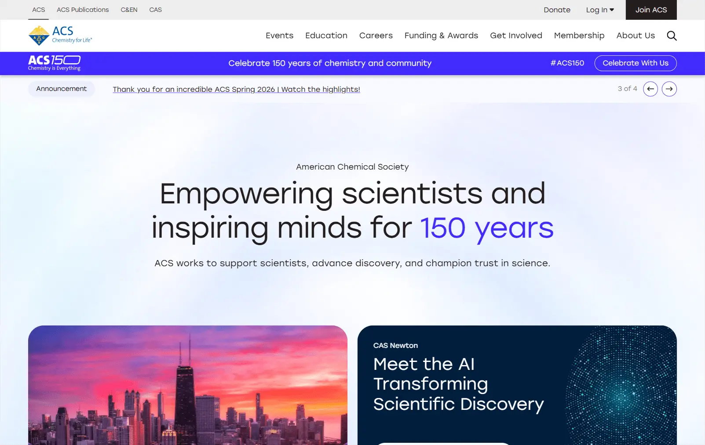
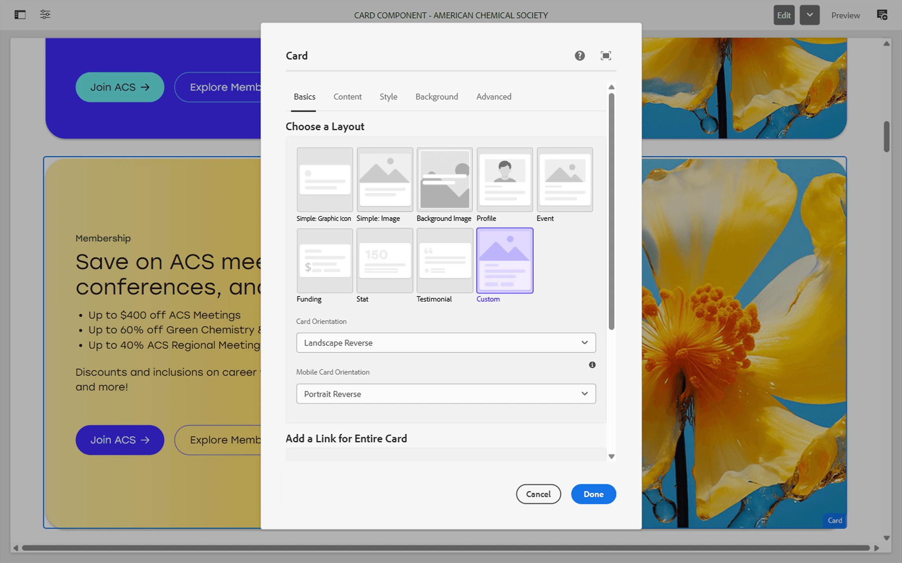
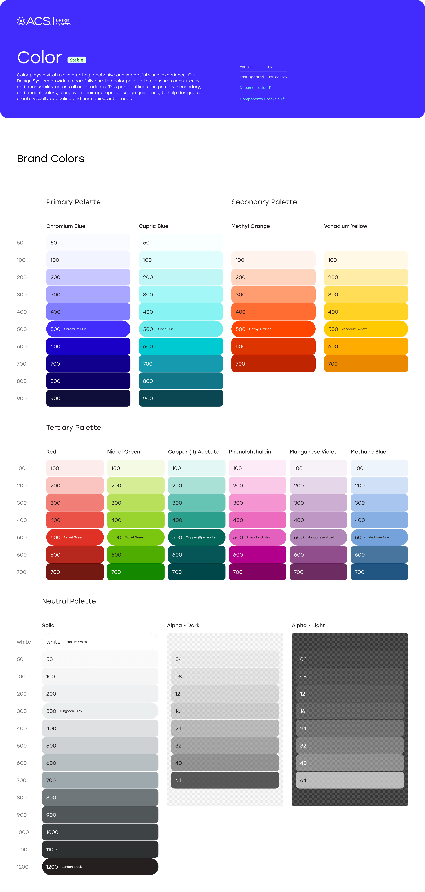
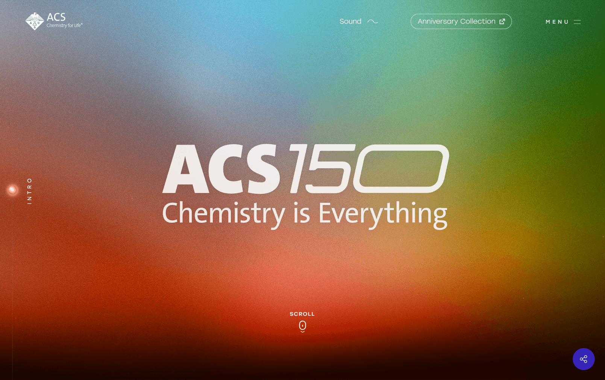

American Chemical
Society
The American Chemical Society (ACS) is one of the world's largest scientific organizations, dedicated to advancing the broader chemistry enterprise and supporting researchers, educators, and students globally. I led the comprehensive redesign of the primary ACS web ecosystem, transforming it into a high-performance, forward-looking scientific portal.
I focused on UI development embedded in the UX Design team, centered on AEM component implementation, frontend fixes, and authoring support. I developed and refined responsive AEM components, from a robust card component with a multitude of layout states and advanced configuration, to layout components with configurable background shader options, and many things in between.
I co-created the design system for the updated website for the 2026 rebrand, and led the implementation of it into the codebase. Additionally, I created a custom, AEM-embedded experience that leveraged GSAP and three.js for soft-animation storytelling, visual effects, including an interactive timeline and more.



